Videopelien pelaamiseen tarvitaan alusta, johon kuuluu käyttöliittymä ja näyttölaite. Se voi olla esimerkiksi tietokone, pelikonsoli, käsikonsoli tai matkapuhelin. Pelin näkee tietokoneen näytöstä, televisiosta tai laitteen omasta näytöstä. Ensimmäiset pelikonsolilaitteet julkaistiin 70-luvulla ja ovat kehittyneet sukupolvesta toiseen nykypäivään asti.
 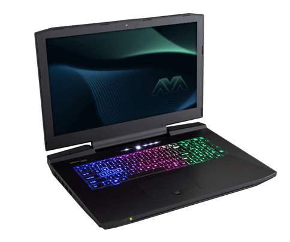
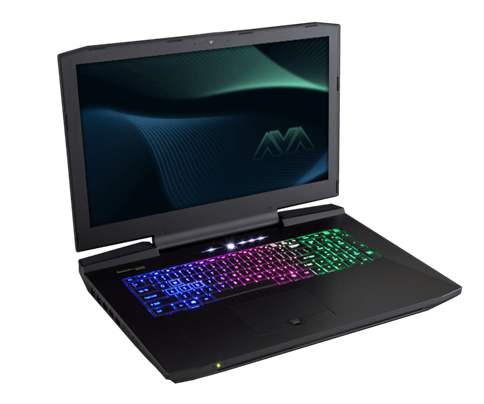
Pelin kontrolloimiseen käytetään tietokoneen hiirtä ja näppäimistöä, konsolin ohjainta tai puhelimen kosketusnäyttöä. Tekniikan kehityttyä erilaisia ohjaimia ja alustoja voi käyttää keskenään. Myös pelaaminen tietokoneilla on parantunut, kun niiden komponenttiosat ovat kehittyneet tehokkaammiksi.
Kuvissa on suosituimpia peli- ja käsikonsoleita eri sukupolvilta, mm. Gameboy-käsikonsoli ja Gameboy Advance. Nintendo Entertainment System (NES) ja Nintendo Gamecube.
Nintendo WiiU ja Nintendo 3DS, josta on julkaistu useita eri malleja ja "sisarversioita", kuten Nintendo 3DS, 3DS XL, 3DS LL, New Nintendo 3DS, New Nintendo 3DS XL.
 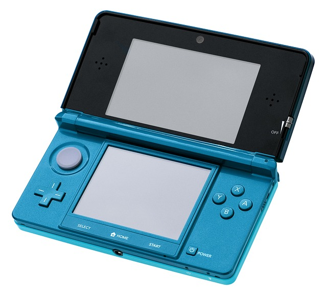
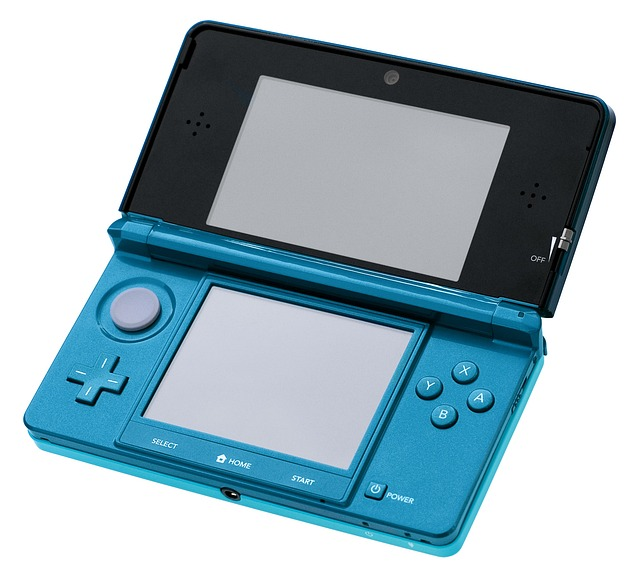
Nykypäivänä tunnetuimmat pelikonsolit: Playstation 1 (PS1), 2, 3, 4, ja Xbox One ja 360.


 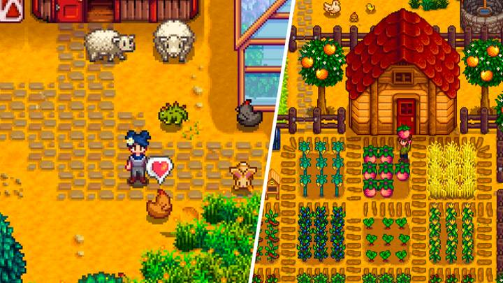
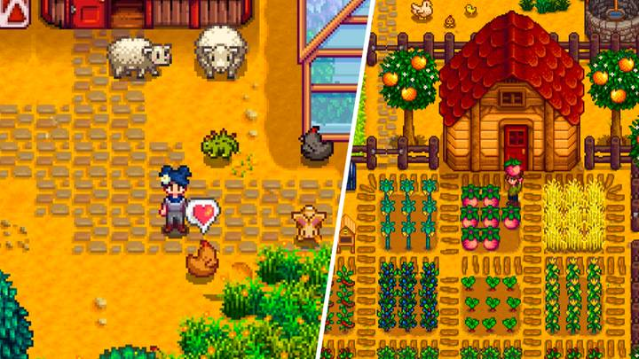


 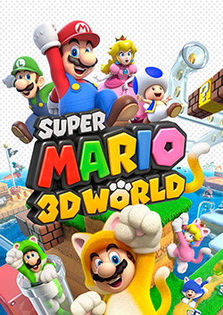
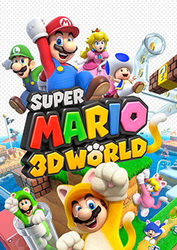
 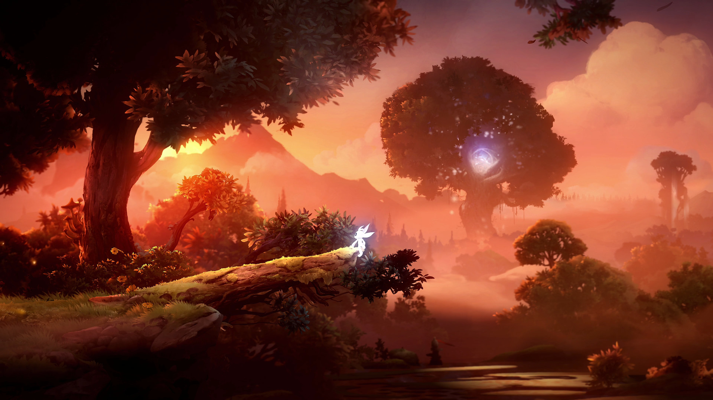
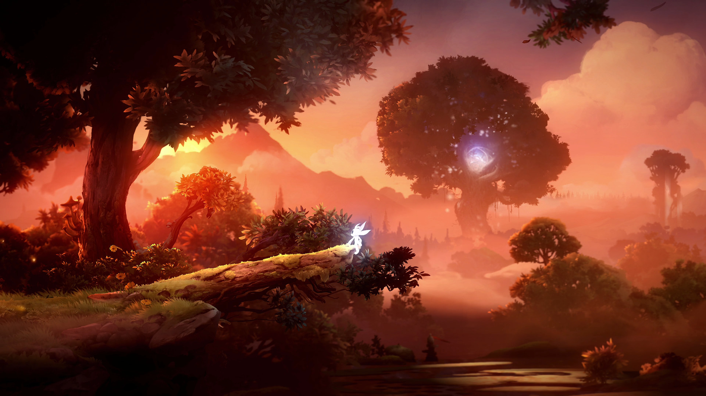

 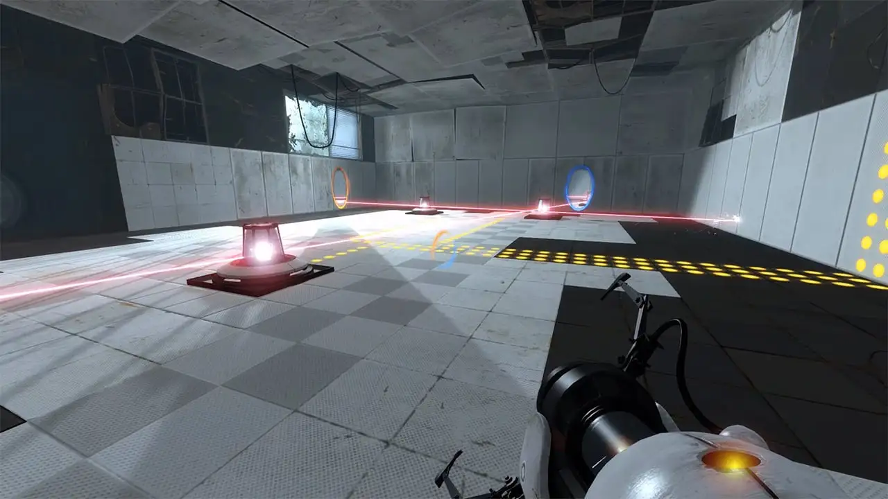
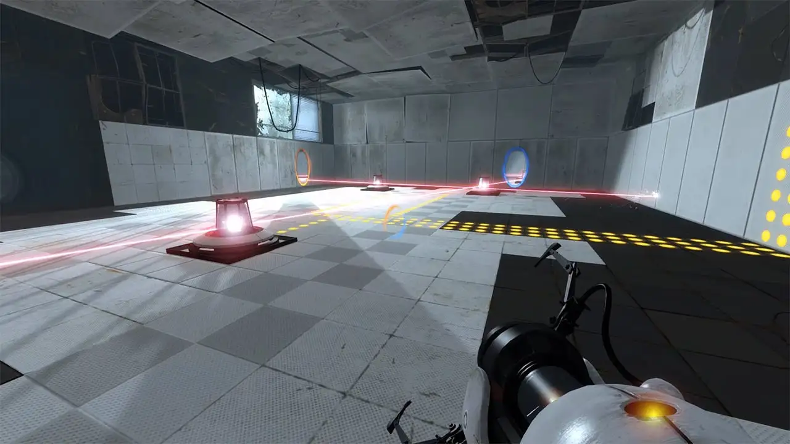

 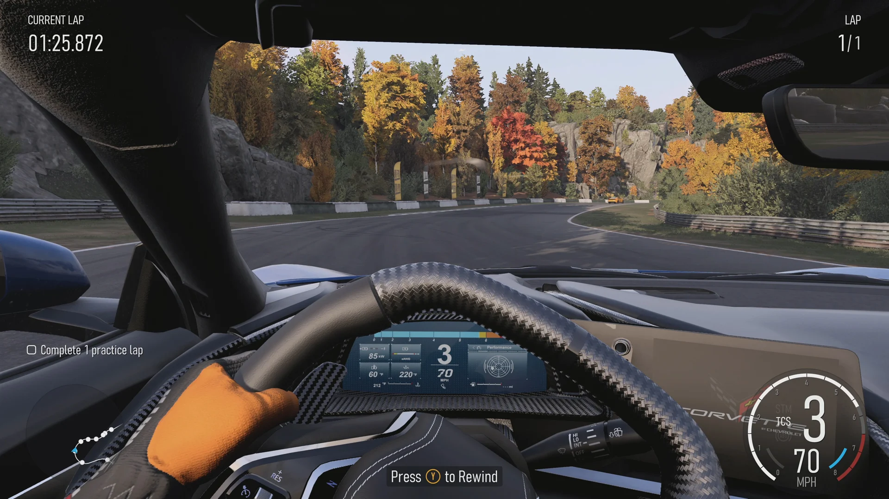
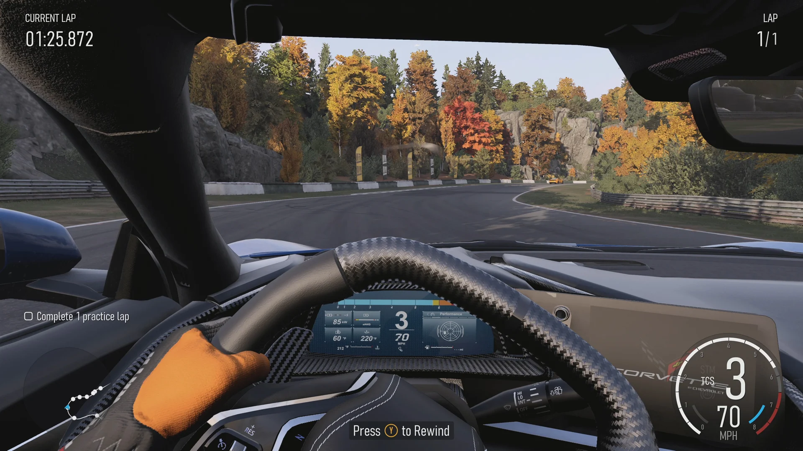
 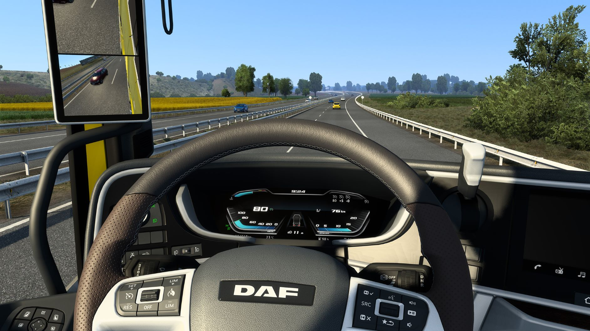
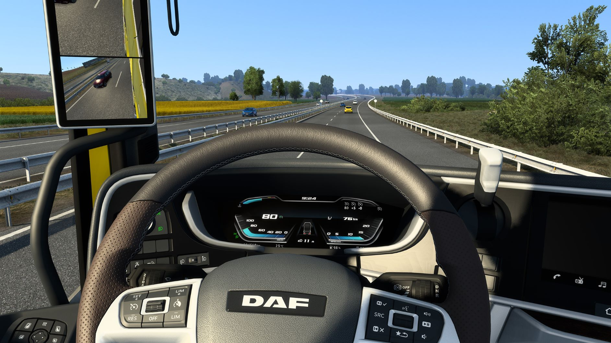